「꼭 성경적이지 않아도 돼, 명화나 좋은 풍경」·「여기가 교회 홈페이지 맞나 하는 생각이 들도록」 말씀에 따라, 종교화가 아닌 풍경화·산수화·정물만 모았습니다. 모두 뉴욕 메트로폴리탄 미술관이 저작권 만료(Public Domain)로 공개한 원본 고해상도 파일이라 조건 없이 쓸 수 있습니다.
1 · 새 첫 화면 규격으로 얹어 본 세 점
미리보기 1 · 22번 「추수하는 사람들」
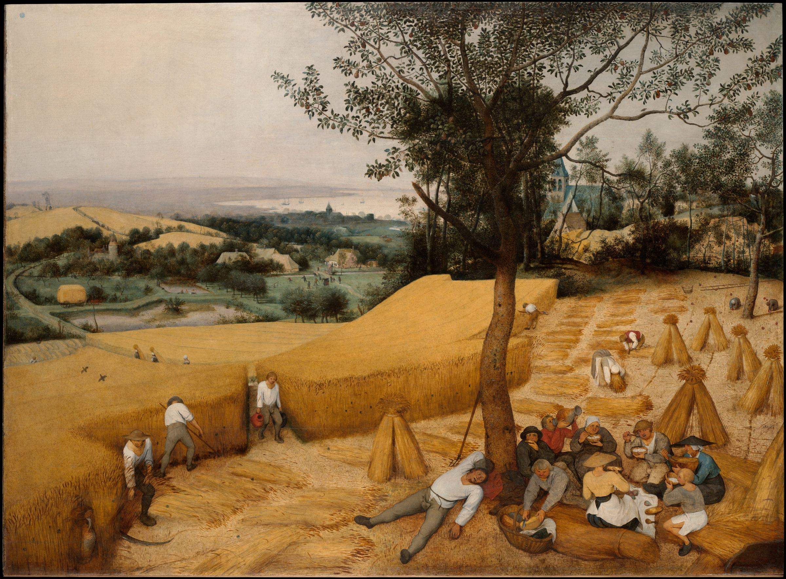
Pieter Bruegel the Elder, 「추수하는 사람들」(1565) 부분 · 메트로폴리탄 미술관
22번 — 황금빛 밀밭과 넓은 하늘 — 가장 힘 있는 그림, 추수의 계절감.
미리보기 2 · 27번 「산수(병풍)」
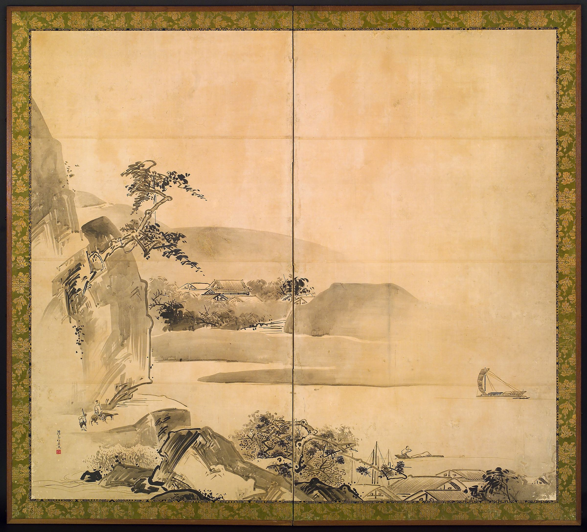
Watanabe Shikō 渡辺始興, 「산수(병풍)」(first half of the 18th century) 부분 · 메트로폴리탄 미술관
27번 — 여백이 주인공인 일본 병풍 — ‘전시회 느낌’에 가장 가깝습니다.
미리보기 3 · 05·10·16번 「여울을 건너는 소 떼」
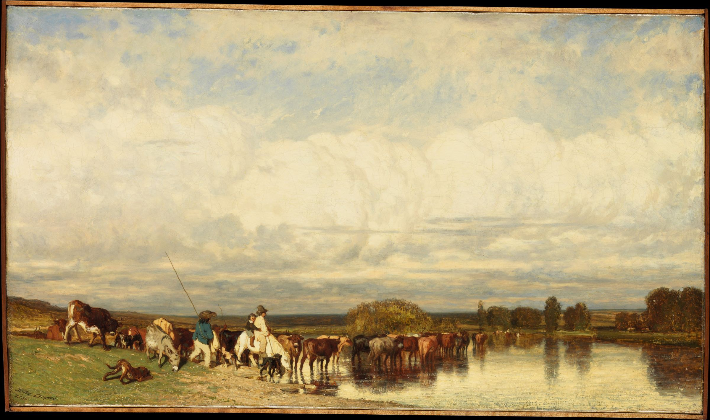
Jules Dupré, 「여울을 건너는 소 떼」(1836) 부분 · 메트로폴리탄 미술관
05·10·16번 — 하늘이 화면 절반 이상 — 글자를 얹기에 가장 좋은 구도.
2 · 후보 12점 (번호 = 콘택트 시트 번호)
22
Pieter Bruegel the Elder · 「추수하는 사람들」
The Harvesters · 1565 · Oil on oak
메트로폴리탄 미술관 소장 · Public Domain(저작권 만료 — 조건 없이 사용) · 소장처 페이지 ↗
황금빛 밀밭과 넓은 하늘 — 가장 힘 있는 그림, 추수의 계절감.
27
Watanabe Shikō 渡辺始興 · 「산수(병풍)」
Landscape · first half of the 18th century · Two-panel folding screen; ink on paper
메트로폴리탄 미술관 소장 · Public Domain(저작권 만료 — 조건 없이 사용) · 소장처 페이지 ↗
여백이 주인공인 일본 병풍 — ‘전시회 느낌’에 가장 가깝습니다.
05·10·16
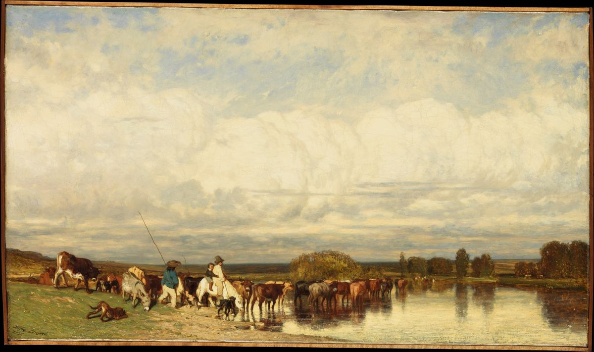
Jules Dupré · 「여울을 건너는 소 떼」
Cows Crossing a Ford · 1836 · Oil on canvas
메트로폴리탄 미술관 소장 · Public Domain(저작권 만료 — 조건 없이 사용) · 소장처 페이지 ↗
05·10·16 은 같은 그림
하늘이 화면 절반 이상 — 글자를 얹기에 가장 좋은 구도.
19
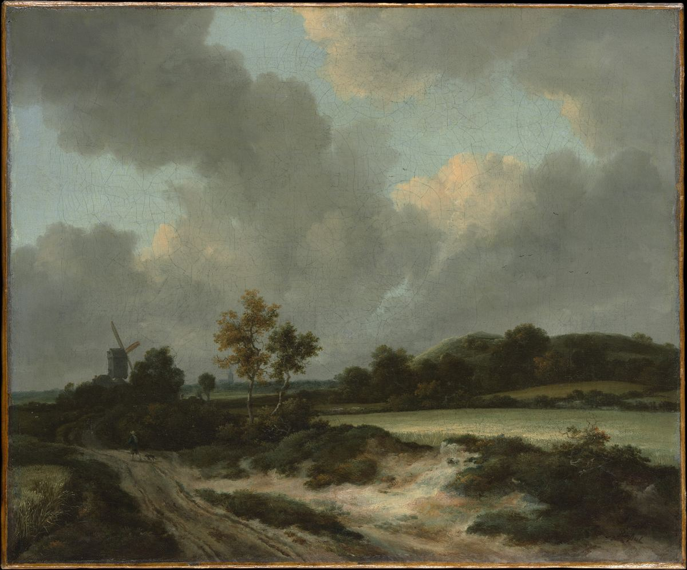
Jacob van Ruisdael · 「밀밭」
Grainfields · mid- or late 1660s · Oil on canvas
메트로폴리탄 미술관 소장 · Public Domain(저작권 만료 — 조건 없이 사용) · 소장처 페이지 ↗
극적인 구름과 들판 — 네덜란드 풍경화의 대표작.
15
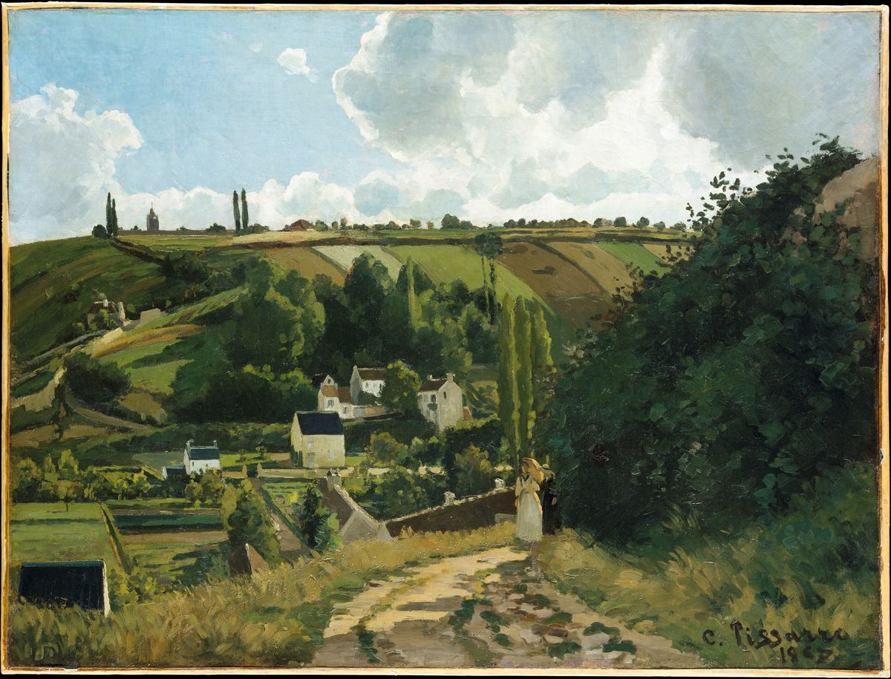
Camille Pissarro · 「퐁투아즈의 잘레 언덕」
Jalais Hill, Pontoise · 1867 · Oil on canvas
메트로폴리탄 미술관 소장 · Public Domain(저작권 만료 — 조건 없이 사용) · 소장처 페이지 ↗
초록 언덕과 마을길 — 밝고 차분한 인상파 풍경.
21
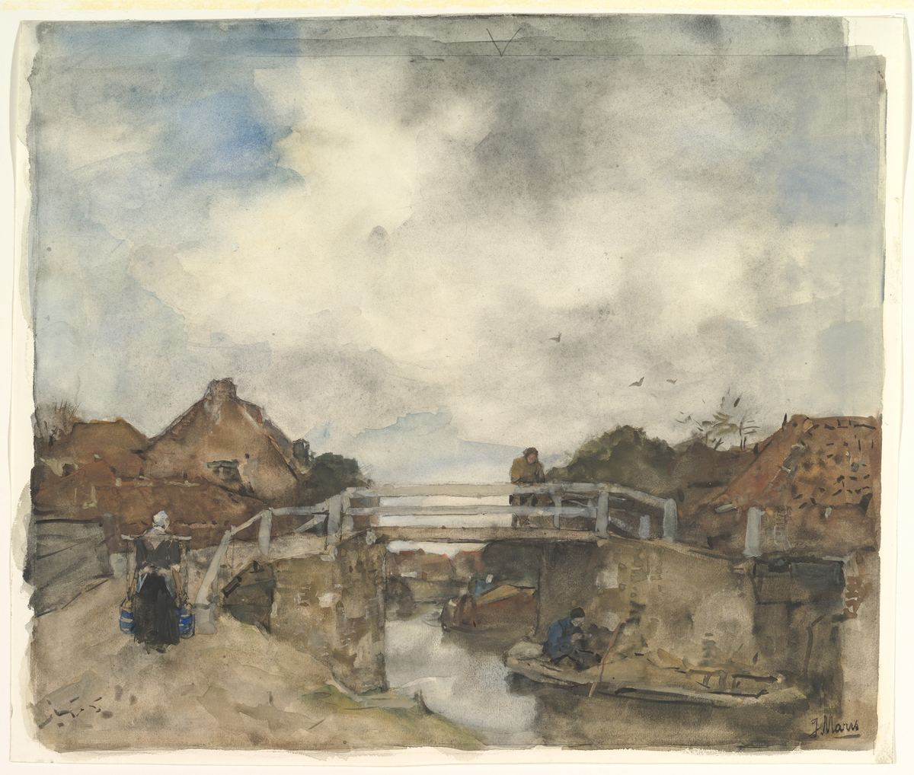
Jacob Maris · 「레이스베이크의 네덜란드 운하」
Dutch Canal, Rijswijk · second half 19th century · Watercolor over traces of black chalk
메트로폴리탄 미술관 소장 · Public Domain(저작권 만료 — 조건 없이 사용) · 소장처 페이지 ↗
수채 — 옅은 물빛, 색이 적어 가장 조용합니다.
20
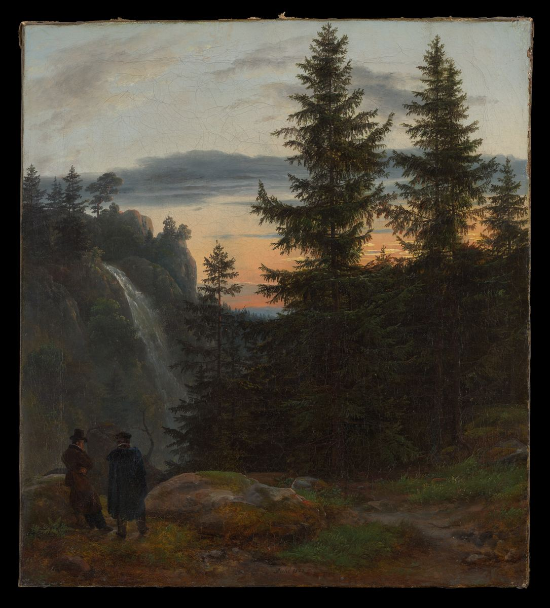
Johan Christian Dahl · 「해 질 녘 폭포 앞의 두 사람」
Two Men before a Waterfall at Sunset · 1823 · Oil on canvas
메트로폴리탄 미술관 소장 · Public Domain(저작권 만료 — 조건 없이 사용) · 소장처 페이지 ↗
세로 그림
노을빛 폭포 — 세로 그림이라 첫 화면보다 섹션용.
33
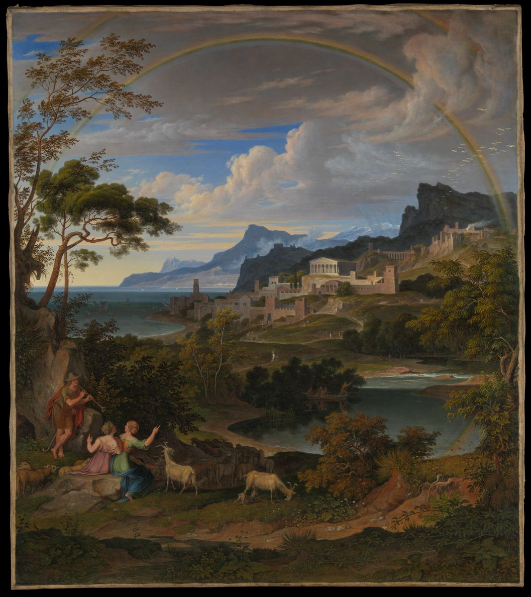
Joseph Anton Koch · 「무지개가 있는 영웅적 풍경」
Heroic Landscape with Rainbow · 1824 · Oil on canvas
메트로폴리탄 미술관 소장 · Public Domain(저작권 만료 — 조건 없이 사용) · 소장처 페이지 ↗
세로 그림 · 시트 분류 ‘동양-한국’은 오기(독일 화가)
무지개와 산 — 세로 그림.
30
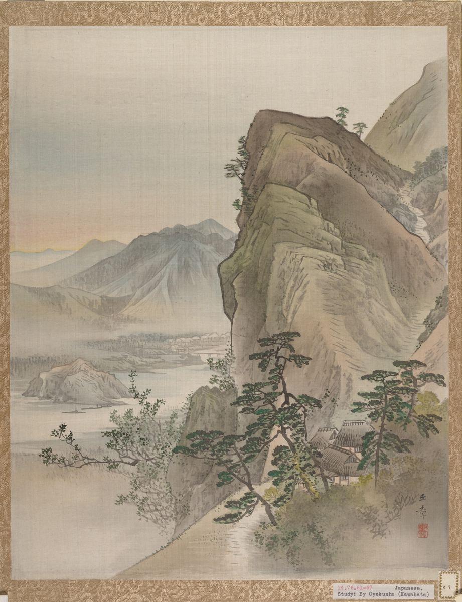
Kawabata Gyokushō · 「산수」
Landscape · ca. 1887–92 · Album leaf; ink and color on silk
메트로폴리탄 미술관 소장 · Public Domain(저작권 만료 — 조건 없이 사용) · 소장처 페이지 ↗
세로 그림
메이지 시대 일본 산수 — 세로 그림.
31
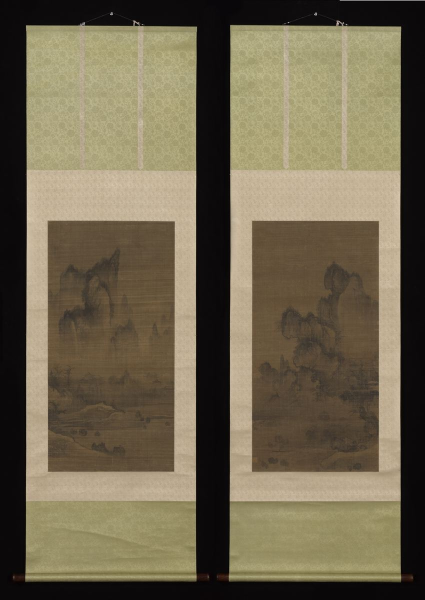
Style of An Gyeon · 「연사모종 · 동정추월(소상팔경 중)」
Evening bell from mist-shrouded temple (left); Autumn moon o · ca. 1450–1500 · Pair of hanging scrolls; ink on silk
메트로폴리탄 미술관 소장 · Public Domain(저작권 만료 — 조건 없이 사용) · 소장처 페이지 ↗
세로 그림 · ★도판 목록 제외(master ④ 2026-09-30): Met 제목 Evening bell from mist-shrouded temple = 안개 낀 절의 저녁 종 — 절이 제목에 있음
조선 초 안견 화풍(Met 표기 Style of An Gyeon — 傳·attributed 아님) — 한국 그림, 안개 낀 산과 물. 세로 그림.
37
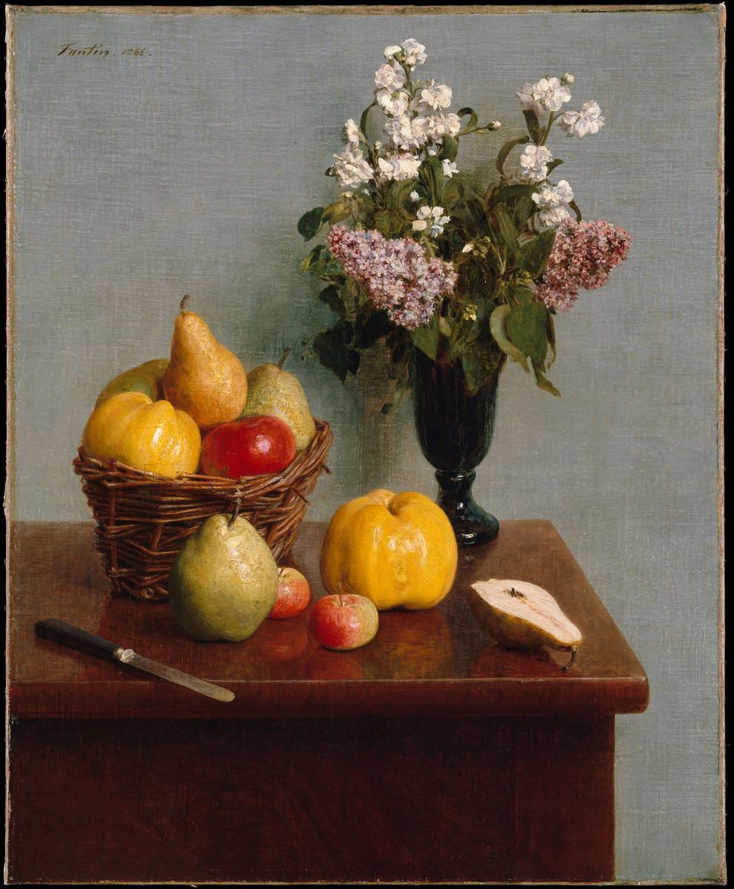
Henri Fantin-Latour · 「꽃과 과일이 있는 정물」
Still Life with Flowers and Fruit · 1866 · Oil on canvas
메트로폴리탄 미술관 소장 · Public Domain(저작권 만료 — 조건 없이 사용) · 소장처 페이지 ↗
세로 그림
정물 — 세로 그림, 섹션 배경·소재용.
24·32
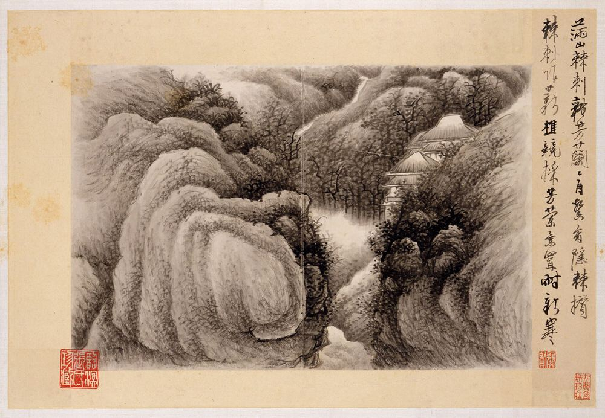
Gong Xian · 「시가 있는 산수」
Landscapes with poems · 1688 · Fifteen leaves from an album (1980.516.2
메트로폴리탄 미술관 소장 · Public Domain(저작권 만료 — 조건 없이 사용) · 소장처 페이지 ↗
24·32 는 같은 그림 · 해상도 부족
수묵 산수 화첩 — 원본 파일이 1000px 로 작아 전폭에는 부족(참고용).
3 · 뺀 것
[초안] 2026-09-30 · 원본 파일: r4/drafts/art_master/NN.jpg(master 확보) · 화면용 축소본: art_master/web/ · 각 작품 Public Domain 여부는 메트로폴리탄 미술관 공개 API(isPublicDomain)로 다시 확인했습니다.